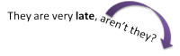
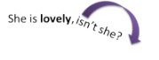
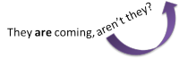
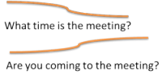

Interrogatives

Making questions seems such an obvious language skill that we hardly need to analyse how it is done in English. That's a mistake because English is, in many respects, unlike most other languages in the ways it forms questions, although, of course, the meanings and functions of questions are common to all languages.
 |
Task: This guide deals with the six major types of questions in English so, to get you thinking about the area, can you decide what they are? Come up with at least three if you can. Click here when you have a response to that. |
- Yes / No closed questions such as
- Have you spent all your money?
- Do you want anything else?
- Is he waiting for you?
- Tag questions such as
- You aren't going to tell her, are you?
- He did it, didn't he?
- You won't go, won't you?
- You want that, do you?
- Alternative questions such as
- Are you coming or not?
- Did you phone her, email her or text her?
- Wh-questions (also called
Content questions) such as
- Where are you going?
- How is this done?
- What do you want?
- Why did you do that?
- Who called?
- Who(m) did you ask?
- Which shop did you go to?
- Declarative questions such as
- He's her brother?
- It's closed?
- You went to Scotland at the weekend?
- Embedded questions such as
- Can you tell me where he lives?
- Ask Mary what time the bus leaves
- She wanted to know why I was late
 |
Two terms |
We can take these six question types one at a time but first we need to get two technical terms straight.
- assertive and non-assertive forms
- The assertive forms of determiners, adverbs and pronouns are
those that generally appear in simple statements.
Non-assertive forms usually appear in negatives and questions.
For example (assertive forms in black, non-assertive forms in red):
I have some work to do
Do you need any help?
I've already got someone to do that
Have you started yet?
I'm still thinking about it
I won't trouble you any longer
Was there anything else?
The importance of distinguishing the forms will become clear soon. For more, see the guides to assertion and non-assertion and to making negatives in English (links at the end). - operators
- The operator in English (and other languages) is a
grammatical term. In English grammar, for our purposes
here, it is the auxiliary form of the verbs do, be
and have. In these examples, the operator is
in black:
Does she know you?
Have you had enough?
Is that tap leaking?
Do you want to go?
Has she seen the film?
Are they coming to the party?
Did they manage to catch the train?
You can work through the guide from here or use this menu to go to the type of question which interests you from this menu.
| Yes / No questions | Tag questions | Alternative questions | wh-questions | Declarative questions | Embedded questions | Other languages |
At the end of each section, you can click on -top- to return to this menu, simply read on, scroll back or bookmark the page for another time.
Yes / No questions |
|
| Will you marry me? |
 |
Forming Yes / No questions |
The way to make yes / no questions is to put the operator before the subject.
Primary auxiliary verbs
It's generally quite simple with auxiliary verbs
and works like this:
He has been to the States → Has he been
to the States?
She is arriving later → Is she arriving later?
and so on.
The verbs be and have work in the same way even
when they are the main verbs rather than functioning as auxiliaries
as in, e.g.:
He is here → Is he here?
She has your address → Has she your address?
In British English the verb have is troublesome for
learners because there are alternative forms, the first of which is
rarer and more formal:
Have you my telephone number?
Have you got my telephone number?
Do you have my telephone number?
In American and related varieties of English, the preferred form is
to use the do operator only to render the question as:
Do you have my telephone number?
When in its function as an operator, the verb do also forms questions by simple inversion of the verb and the subject. This occurs in tag questions, doesn't it?
Modal auxiliary verbs
These work in the same way as far as central or pure modal
auxiliary verbs are concerned with a simple inversion of verb and subject:
She can play the piano → Can she play the piano?
They must leave → Must they leave?
There are complications with semi-modal auxiliary verbs and marginal modal
auxiliary verbs to which there is a separate guide on this site linked in the list of related guides at the end.
Present and Past simple
In these two tenses only in English, the do operator is employed to make questions and the inflexion on the verb (if one is present in the declarative) is omitted:
- The present simple:
Do you like asparagus?
Does she work here? - The past simple:
Did she ask the boss?
Did you miss the bus?
A very natural temptation for low-level learners of English is to
add the verbal inflexion because that is what they have expended
some effort on learning. We get, for example:
*Does he likes the school?
*Did you missed the bus?
etc.
 |
Intonation and focus in Yes / No questions |
- Question intonation
- Although individual speakers vary, the general way
intonation works is either as a rise at the end of the question
or a fall-rise towards the end like this:

- Focusing
- In spoken language, focus is achieved by placing the nuclear
stress on a selected part of the question, so, for example:
Did she arrive on time?
focuses on when she arrived but
Did she arrive on time?
focuses on who arrived and
Did she arrive on time?
focuses on what she did.
 |
Meaning of Yes / No questions: orientation |
The meaning of yes / no questions depends to an extent on the orientation of the questioner.
- Neutral orientation
- When the speaker has no pre-determined orientation, the
non-assertive forms
are used:
She wants some help → Does she want any help?
She is already here → Is she here yet?
Something's the matter → Is anything the matter?
He has a house somewhere else → Does he have a house anywhere else? - Positive orientation
- When the speaker has a pre-determined bias concerning the
truth of a proposition, however,
assertive forms are used
because the speaker is expecting a positive answer:
I want some help → Do you want some help?
She has already left → Has she left already?
There's something the matter → Is there something the matter?
He has a house somewhere else → Does he have a house somewhere else?
Positive orientation also explains the use of assertive forms in questions that are really offers such as:
Would you like some coffee? - Negative orientation
- When the speaker expects a negative outcome, the situation
gets more complicated.
The primary way negative orientation is signalled is through negative questions:
Nobody came → Didn't anybody come?
You can't speak French → Can't you speak French?
Unfortunately, negative questions can also signal positive meanings because they imply that the speaker is surprised by the truth of a proposition, having assumed the contrary, so, for example:
Can't you give me any help, at all?
implies that I thought you could.
It is possible, too, to use assertive forms with negatively oriented questions although slightly rare so we allow, e.g.:
Couldn't you give her some help?
which may imply that the speaker is making a request rather than asking a question.
Negative questions are also used to express irritation because they imply a frustrated positive assumption, for example:
They promised to deliver it in three days. Isn't it here yet?
Alternative word ordering in negative questions
All the yes / no negative question forms above have an
alternative word ordering which is both more emphatic and more
formal.
It consists of removing the n't construction and placing
not immediately after the main verb as in, for example:
Ought you not to go to school?
Did she not turn you down?
Were they not told about the dangers?
and all these forms imply strongly that the speaker is orientated
positively or negatively depending on the sense so the answers that
are expected are, respectively:
Yes, I should
Yes, she did
No they weren't
 |
Tag questions |
Tag questions are classic cases of the speakers' orientation determining the form of the question.
Tag questions are almost solely used in informal spoken language
or written language which resembles spoken language (such as very
informal emails).
They can be (in summary only, more is explained below):
- simple statements requiring only confirmation (falling intonation)
- You're coming too, aren't you?
- real questions (rising intonation)
- You'll help won't you?
- expressions of inference (falling intonation)
- That's his sister, isn't it? They are so alike.
- sarcasm (rising intonation)
- So you know better, do you?
- threat (rising intonation)
- You'd try to take my money, would you?
- reprimand (falling intonation)
- You've left your homework on the bus, have you?
- conclusion (falling or flat intonation)
- So, that's your house, is it?
|
|
Forming tag questions |
Fundamentally, tag questions are formed in two ways:
Balanced tags

For example (tags in black):
- You've finished, haven't you?
- You haven't finished, have you?
- They have arrived, haven't they?
- He hates it, doesn't he?
- He doesn't like it, does he?
In balanced tags:
- Negative sentences take a positive tag and vice versa:
She doesn't understand, does she? (negative + positive)
Mary can come too, can't she? (positive + negative)) - With main or lexical verbs in present and past
simple tenses such as like,
hated, enjoy, do, arrived etc., we use the auxiliary verb do
in the tag as the operator:
He didn't go, did he?
She smokes too much, doesn't she? - With central or pure modal auxiliary verbs like can, must, could etc., we
simply invert the verb and the subject to make a tag:
They couldn't see her, could they?
The play should be popular, shouldn't it? - With the verb be,
whether it is an auxiliary or a copular verb, we simply invert the
order of subject and verb to make the tag:
You are John, aren't you? (as a main identifying verb)
You aren't alone, are you? (as a main verb with an adjective complement)
You are working too hard, aren't you? (as an auxiliary forming the progressive)
She was arrested, wasn't she? (as an auxiliary forming a passive voice sentence) - With the verb have
the situation is slightly more complicated:
- When it is an auxiliary forming a tense, we treat it like
be, inverting the subject and the verb:
She has arrived, hasn't she?
She had left already, hadn't she? - When it functions as a main verb, meaning something like
possess, both forms are possible:
They have a lot of money, don't they?
They have a lot of money, haven't they?
They don't have much money, do they?
They haven't much money, have they?
But, when we insert got after the verb, only the inverted form is possible:
We haven't got a lot of time, have we?
not
*We haven't got a lot of time, do we?
American and British usage differs in some respects here because AmE uses got less frequently in this sense as we saw. - When it functions as a main verb with a different
meaning (such as take or eat) the do
operator is used when the tense requires it and inversion is
not allowed so we get:
She had a shower, didn't she?
They have only coffee for breakfast, don't they?
not
*She had a shower, hadn't she?
*They have only coffee for breakfast, haven't they?
- When it is an auxiliary forming a tense, we treat it like
be, inverting the subject and the verb:
Unbalanced tags

Unbalanced tags involve positive + positive or negative + negative and have number of uses:
- Inference:
So, the car's over the road, is it?
i.e., I have figured this out from where we are walking - Sarcasm, suspicion or irony:
So you think you know me, do you?
i.e., you are presuming too much or
So, you don't believe me, don't you?
i.e., it's not your place to make judgements - Threat:
You'd take my money, would you? - Conclusion:
So, he likes the book, does he?
So, he hasn't had the time, hasn't he?
 |
Intonation, Pronunciation and Meaning in tag questions |
Meaning is closely tied to intonation.
Balanced tags exhibit two tones:
- In many cases, the tone of voice falls on the tag, like this:
|  |  |
When the voice falls like this, the tag functions to mean
something like:
Please say you agree with me.
In
other words, it asks for confirmation that the speaker is correct;
it signals a positive orientation.
Notice that the words lovely and late are also
stressed here.
- When the tone rises, like this:
|  |
 |
then the sentences function as true interrogatives. Notice that now we stress the verb because that is the focus of our attention.
In all unbalanced tag questions, the tone rises on the
verb in the tag and falls on the pronoun, like this:
An exception is declarative questions with tags and we'll come to that shortly.
Meaning depends on speaker intention and orientation
The communicative function of the sentence is drawn from the
first clause. Compare, e.g.:
You want a drink, don't you?
where the speaker is probably sure the answer will be 'yes'
with:
You don't want a drink, do you?
where a falling tone would imply the speaker expects a negative
response but a rising tone would indicate surprise.
The same thing happens with modal auxiliary verbs. Compare:
You couldn't do it for me, could you?
where a rising tone indicates a request, with:
You could do it for me, couldn't you?
where a rising tone indicates a request but a falling tone indicates
almost a command.
Pronunciation is a small issue
It is rare for weak forms of vowels to occur in tags. For
example, the
verb can is usually contracted to /kən/ in connected
speech but in the tag, it retains its full pronunciation as /kæn/.
E.g.:
I can come, can't I? is usually transcribed as /ˈaɪ kən
kʌm ˈkɑːnt aɪ/ but
I can't come, can I? is usually /ˈaɪ kɑːnt kʌmm ˈkænnaɪ/
Assertive and non-assertive use
If a positive response is expected, assertive forms will be used:
You need
some more time, don't you?
You need
something to eat, don't you?
You have finished
already,
haven't you?
They aren't still
here, are they?
If a negative response is expected, non-assertive forms will
dominate:
You don't need
any more time, do you?
You haven't finished
yet, have you?
They have no
money, have they?
They aren't here
any longer, are they?
Transferred negation
A peculiarity of English is the transfer of negation and the
forms of tags which arise from it.
For example, the statement:
I don't think he'll arrive
has the tag
... will he?
rather than the expected:
... do I?
because the negation has been transferred from the subordinate
clause (he'll arrive), where it logically belongs, to the
main clause. Compare:
You think he won't come, don't you?
For more on this, see the guide to negation linked in the list of related guides at the end.
 |
A note on other languages |
A few languages work like English with tags following grammatical
rules for forming questions and negatives but many do not. For
example:
Many languages, including Polish, German, Greek and others
can use a phrase or a single word meaning, roughly, True? or
Not
true? So, e.g.:
German: nicht wahr? [not true?], Spanish: ¿verdad? [true?],
Polish: prawda? [true?] or nieprawdaż? [not true?], Greek:
δεν είναι ετσι; (then eenay etsi?) [is it not
so?] and so on.
Some languages have a small range of words or phrases to ask for
agreement such as French: n'est ce pas? [isn't it]
or d'accord? [agree?] or even, simply, non? [no]
appended to the declarative clause.
In many languages there exists a small word used only for tag
questions such as Mandarin (ma?), German dialects (gell?)
Portuguese: (né?) and so on.
In most languages, the forms have become fossilised and do not vary in the complicated ways that the tags vary in English. This presents obvious problems for learners.
 |
Alternative questions |
Alternative questions are sometimes seen as a subset of yes / no
questions because they have similar forms and similar issues
concerning the questioner's orientation and communicative intention.
There are two sorts:
- Resembling yes / no questions:
Would you like tea or coffee?
Can you stay late or do you have to go?
Do you want a biscuit, some cake or a bit of chocolate? - Compound questions which begin with a wh-question
and then offer the alternatives:
Which do you want? Cake or biscuits?
Where did he go? London or Manchester?
Intonation is crucial
We saw above that on yes / no questions, the general way
intonation works is either as a rise at the end of the question or a
fall-rise towards the end. Not so with alternative questions
in which the intonation rises after each member of the list, like
this:

Using the wrong intonation can cause communicative failure because,
if the questioner's voice rises only on the final element, the
hearer will assume it is a yes / no question. Consider these
two dialogues:
An alternative question:

To which the expected answer is one or the other
A yes / no question:

To which the answer may be Yes, please or No, thank you (or I'd rather have a beer).
It is possible to convert any yes / no question into an
alternative question by adding or not with rising
intonation after the central question so

can be converted into:
 |
Wh-questions |
There are 9 main wh-words:
what, when, where, why, who, whom, which, whose, how
We will consider them in isolation and talk about what else they do
later.
Not only do these words make questions,
the reason they do so is to do with their meaning. They all
have the general meaning of
I do not know what this refers to so
tell me.
This is why wh-questions are frequently referred to as
content questions because the answer is expected to supply the
missing content.
We can elicit a range of information using these nine words.
- manner:
How did she do that? - origin:
How did you find out? - subject noun phrase:
Who said that?
What went wrong? - object nouns and clauses:
What did she say?
Which do you want? - location:
Where did they go? - time:
When did they go? - reason:
Why was she crying? - purpose:
Why did you give me that? - possession, relationship, attribute or source:
Whose is it?
Whose sister is she?
Whose policy is that?
Whose letter upset you?
- How questions are normally answered by using a
whole sentence. An example might be
How did you know?
Mary told me
It is unlikely that an answer would be
Immediately
but that is possible. Adverbs are sometimes what the question is getting at as in e.g.,
How was he driving?
Very carefully
but that is a fairly rare event.
The issue is that the simple word how is polysemous: it means in what way and it means from what origin depending on the context and the speaker's intention. - What questions are almost always directed at
non-human nouns or noun phrases so an answer to the question
might be something like
What was she wearing?
Jeans and a T-shirt
What questions rarely refer to humans and we prefer
Which person did you ask?
or
Who(m) did you ask?
over
What person did you ask? - Where questions are used to elicit spatial
information. The answer will normally be a place adverbial, an
adverb or a
prepositional phrase, e.g.:
Where did they go?
To London
London
Into the house
Out
Home - When questions usually elicit a time, a
prepositional phrase adverbial or a subordinate clause so possible answers are
When did they go?
At 6
After lunch
When everyone had finished - Why questions are also normally answered with whole
sentences (sometimes much more) or clauses beginning with a word
like because such as:
Why was she crying?
Because it was so sad
Because he'd been so rude
We can omit because although it is implied as in, e.g.:
The car had broken down again
These questions also frequently elicit a clause beginning with a to-infinitive, in order to and so that:
To make him feel guilty
In order to make him feel guilty
So that we'd take pity on her
The word why is also polysemous. We need to be slightly careful to distinguish between the reasons something happens and the purposes of someone's actions. For example,
Why does iron sink in water?
means:
How come iron sinks in water?
and requires an understanding of the properties of iron and water such as:
Because it is denser than water due to its crystalline nature
On the other hand:
Why did you put it in the water?
means:
What did you put it in the water for?
and that requires the responder to discuss purposes, not reasons, such as:
Because I wanted to soak off the dirt
This is a slightly subtle point to do with the polysemous nature of the word why but it is important when one is framing questions in the classroom, for example:
Why do we need a preposition here?
refers to the reason for the item, but:
Why do we use for and not to in this sentence?
refers to the purpose of the preposition. - Who questions traditionally refer to people as the subject
of the verb but also, frequently, to the object. They always
refer to people, never inanimate objects and rarely non-humans.
They elicit noun phrases.
Who told you?
John
The man in the shop
Those people - Whom questions can only be
reference to human objects of the verb.
Whom did you tell?
John
The man in the shop
Those people
In colloquial English whom is frequently replaced by who so the question could easily have been
Who did you tell?
but it still refers to the object, not the subject of the verb. - Which questions imply a choice from a limited
number of options that the questioner is aware of. They
can apply to people and to non-animate items as in:
Which shirt do you want?
The blue one
That one
but if they are used to refer to people, they must be accompanied by a noun such as girl, boy, man, person, customer etc., all of which refer to classes of people. The question cannot be:
*Which did you tell?
but could be
Which police officer did you tell?
The tall one
Him
That one - Whose questions refer to people and very rarely to
animals or inanimate objects. Possible answers will
include the possessive 's marker or involve the use of
a possessive determiner or pronoun:
Whose is that hat?
John's
Your mother's
His
It's my hat
Questions with whose, although they refer to the genitive case, cannot be answered with the of-formulation. For example, although we can say both:
the government's policy
and
the policy of the government
the question:
Whose policy is it?
can elicit:
The government's
but cannot be answered with
of the government.
 |
What is not possible with what |
There are some things that what questions cannot elicit. For example:
- We cannot ask about the dummy subject it. We
can say
It got very windy yesterday
but the question
What got very windy yesterday?
is meaningless because the answer would be it.
However, the dummy subject or existential there can be the focus of the question:
There is a shed at the end of the garden
can be elicited with
What is at the end of the garden? - We cannot ask about the adjective subject complements of
copular
verbs such as appear, grow, become, seem etc. We
can say
John appeared tired
She was exhausted
They grew angry
but the questions
*What did John appear?
*What was she?
*What did they grow?
are not possible without altering the meaning in the last case (to suggest cultivate).
(However, the word how can elicit an adjective subject complement as in:
How was she?
She looked better) - We cannot ask about the verb. We can say
She told her mother a lie
They chose him
but the questions
*What did she her mother?
*What did they him?
are nonsense.
The limitations in English concerning what content can be elicited by what questions and the sorts of nouns to which they can refer are not parallelled in other languages so the area needs to be taught, not assumed.
Intonation in wh-questions |
Unlike yes / no questions, the intonation in most wh-questions falls towards the end of the unit instead of rising. Compare these two questions and say them aloud:
- What time is the meeting?
- Are you coming to the meeting?
Question intonation on questions
formed with wh-words like:
What time is the meeting?
generally falls, but on a yes/no question such as
Are you coming to the meeting?
it tends to rise. The effect can be represented like
this:

This is not an absolute rule – very little of intonation
contains such things – but it is a clear tendency. Many
languages rely solely on intonation to make questions from
statements and the usual form is to have rising intonation so
speakers of these languages will be tempted to transfer the pattern
to wh-questions and sound unnaturally insistent.
They may also naturally transfer what they have learned about
intonation in yes / no questions and sound quite rude.
This is an area that needs to be taught because many learners will
assume that intonation always rises on questions and are in danger
of sounding rude and demanding if they do this with wh-questions.
|
|
Forming wh-questions |
The issue here is case. There are three which apply to wh-questions: nominative (subject case), accusative (object case) and genitive (possessive case).
- It matters a lot if the wh-word is the subject of
the sentence or not. When the wh-phrase
is the subject
of the verb, the order of words which follow it is unchanged
from a simple positive statement. We merely replace the
subject noun or noun phrase without disturbing the word order.
For example:
Positive sentence vs. Wh-question The boys from over the road broke the glass Who broke the glass? John's car hit the gate Whose car hit the gates? The marching band from Baltimore comes next What comes next? - In other circumstances, the question word refers to the
object of the verb we get a pattern like this. The order of words after the
wh-word is changed to reflect the fact that it is a
question form. In other words, we add the wh-word to the
normal question form.
With modal auxiliary verbs and the verbs be and have acting as primary auxiliary verbs, the normal rules for forming yes / no questions apply to wh-questions.Yes / No question vs. Wh-question Did you lose a letter? Which letter did you lose? Did you see anyone? Whom/Who did you see? Yes / No question vs. Wh-question Have you lost the letter? What letter have you lost? Can you see anyone? Whom/Who can you see? Is he coming? When is he coming? - Where the wh-word refers to the complement (rather than the
object) of the verb, the same patterns occur.
Yes / No question vs. Wh-question Have you been here long? How long have you been here? Were you late? Why were you late? Are you going to tell her? When are you going to tell her? Is the meeting here? Where is the meeting?
This is a complication which many other languages do not share so it is a source of errors such as:
- *Who did break the glass?
- *What does come next?
- *Why you are late?
- *When you are going to tell her?
etc.
 |
Complications with how, what and why |
how
Most wh-words have a straightforward meaning. The word how is somewhat different because it operates with a range of adverbials and can elicit:
- duration:
How long have you been waiting? - frequency
How often does she do that? - degree
How much does he want the job? - distance or duration:
How long is the journey? - personal feeling:
How are you? - quality:
How was the trip? - extent:
How interesting did you find it? - quantity:
How many do we need?
The issue here is the word is followed by a range of other items (quantifiers, adverbs, adjectives etc.) and its meaning alters considerably. Other languages do not have such a common multiword so the area needs handling carefully. Learners can easily become confused.
what
The word what also exhibits multiple meanings but to a
lesser extent. We can have, for example:
What did you tell her?
which refers to a nominalised clause and elicits answers such as:
That I was coming later
or we can ask:
What can I help you with?
which refers to a clause or noun phrase and elicits answers such as:
Getting this PC to work properly
or
This blessed computer program
We can also ask:
What flight are you on?
which elicits a noun phrase such as:
BA507
This word also allows a rare negative question use as in, e.g.:
What didn't they do?
which presupposes that they neglected to do something. Most
other wh-words do not allow this use although why
does (see next).
(It may also suggest that they did a very large number of things and
the statement (as it becomes) tells the listener that the speaker
can think of nothing that was omitted.)
why
This is the only one in the series of nine words which routinely allows a
negative question. This is because we can pre-suppose the fact
that something was not done. For example:
Why didn't she come?
presupposes the fact that she was absent.
With other wh-words, that sort of presupposition is
not usually possible in the negative. We can, as we just saw
have something like:
What didn't you ask?
presupposing that something was not asked.
But we cannot have:
*Where didn't she come?
*When didn't they go?
*How didn't she drive?
*How didn't she hear?
*Whose isn't that?
*Whom didn't you meet?
because such questions pre-suppose that she didn't come somewhere,
they didn't go at some time, she didn't drive in a certain manner,
she didn't hear in some way, something belongs to nobody and
somebody was not met all of which are
vanishingly rare things to imagine.
A marginal case is which as in:
Which didn't you want?
and that presupposes that something was rejected.
 |
wh-questions and prepositions: style |
Formality in English requires the wh-word to be accompanied by its preposition so we get, e.g.:
| Formal question | vs. | Informal question |
| With whom did you come? | Who did you come with? | |
| For what did he ask? | What did he ask for? | |
| With which officer did you speak? | Which officer did you speak with |
That's the general rule but the longer the clause
between the wh-word and the preposition, the more difficult
it gets to construct an informal sentence. Would you accept,
e.g.,
What did you use to get the awful mess out of the pipe and clear
away all the dirty water from the sink with?
or
What time are you going to ask them all and their friends from
Holland to meet us under the pier at?
(We can also construct the awful child's question:
Daddy, what did you bring that book that I didn't want to
be read to out of up for?)
 |
Emphasising wh-questions |
| What ever are they doing? |
The most frequent way to emphasise wh-questions is the use of the word or suffix -ever. For example
- Who ever did that?
- How ever did you manage it?
- Which ever did you choose?
- How ever long have you been waiting?
- Why ever were you late?
- Whose ever car was that?
- When ever are you going to finish?
- What ever did she mean?
- Where ever can she be?
- Whom ever did you tell?
Some things to note:
- There are other popular emphasisers such as the hell, in
heaven's name, on earth etc. For example:
Who in heaven's name is that?
What on earth have you done?
When the hell are you going to pay?
etc.
One taboo word is also used as in:
What the fuck do you want? - The ever expressions are normally written as two words to distinguish their
function. When they are written as one word, they usually
function as adverbs to
mean It doesn't matter who/what/when/how/which etc.
For example
Whoever comes late must sit over there
is not emphatic. It means anyone who comes late.
and
He leaves whenever he feels a little tired
is also not emphatic. It functions as a subordinating conjunction just as when does. The same applies to
You can sit wherever you like
and to many other -ever words. - The emphatic why ever only occurs as two words in English.
Declarative questions |
|
| ... and you packed this bag yourself? |
This is the final and simplest form of question-making in
English. Because it is so simple, learners are tempted to
overuse it. Many languages make questions routinely this way by
simply varying the intonation on a declarative sentence to make it
interrogative (and in some languages, such as Greek, it is the sole
way to make yes/no questions). English can do it but it is unusual,
and almost never occurs in formal writing.
In speech, declarative questions often express surprise or shock.
In writing, they are, informally, signalled by exclamation and
question marks together.
Declarative questions are in the same form as statements but the
intonation is that of a question:
Statement:
Declarative question:

Considerations apply here concerning assertive and non-assertive
forms and the orientation of the questioner. That orientation
can be positive:
You have had someone to help you?
or negative:
You have had no one to help you?
Non-assertive forms are not possible with declarative questions so,
e.g.:
*You have had anyone to help you?
is not possible.
Positively orientated declarative questions are often suffixed with
expressions such as I suppose, I imagine, obviously, I take it,
I assume etc. as in, e.g.:
You asked Mary, I take it?
That's broken, I assume?
You paid, obviously?
etc.
It is possible to insert a tag at the end of declarative
questions as in, e.g.:
You've been to The British Museum, have you?
but in this case the tag intonation resembles that of a normally
balanced tag and not the unbalanced rise-fall illustrated above
because no criticism is intended.
Casual declarative questions |
A casual form of declarative questions is seen in, for example:
Want to go out?
Had lunch?
in which the operator or primary auxiliary and the subject pronoun
are ellipted.
There are some restrictions, however:
- In the simple present tense, this will only work for verbs
used statively (i.e., in a continuous aspect but with a simple
form of the verb) and want is the most common example.
Other verbs will work in this way such as:
Like to see the clowns?
Have a minute to spare?
Hear that?
and so on. - With a prospective aspect, an adverbial needs to be inserted
so parallel forms would be:
Like to see the clowns tomorrow?
Have a minute to spare later? - With verbs used dynamically, in present tense forms, or with
reference to the future this won't work because the construction
then becomes an imperative as in:
Get on the bus
Pass the salt
Explain the problem
Take the bus tomorrow
Pass the exam
etc., none of which is interrogative and have to be rephrased as proper interrogatives as:
Shall we get on the bus?
Would you pass the salt?
Can you explain the problem?
Will you take the bus tomorrow?
Do you think you're going to pass the exam?
etc. - The use does, however, work for past simple forms because
the context usually makes it clear that no imperative is
intended so, for example:
Enjoy the film?
Dance a lot?
Take the bus?
etc. may all be curtailed forms of
Did you enjoy the film?
Did you dance a lot?
Did you take the bus
providing the time reference is clear from context and co-text. - Dynamic uses are allowed in present perfect forms
because they cannot be misinterpreted as imperatives so we find:
Done the washing up?
Been to London?
Spoken to Mary?
Sold the car yet?
Seen the news?
etc. - And they are allowed in progressive forms with present or
prospective meanings because, again, no ambiguity is risked so
we also encounter:
Going to take the train?
Enjoying the party?
Seeing Mary next week?
etc. - It is marginally possible for such forms to appear as past
progressive structures as in:
Cycling to work at the time?
Taking the train in those days?
Living abroad last year?
but these are rare and always require a time adverbial to make the sense (and the tense) clear. They may alternatively be followed by tags such as were you?, was she?, were they? etc. to show the tense.
 |
Embedded questions |
Embedded questions are sometimes called indirect questions and
the term indirect implies the extra level of politeness which
attaches to the form. Structurally, embedding also implies how
the questions are formed.
That is done depending on the type of question we wish to embed.
- yes-no and alternative questions
These are formed by inserting a positive if or whether clause after the introductory formula, like this:
Is she his mother? → Can you tell me if she is his mother?
Are you coming to the party? → Could you tell me whether you are coming to the party? - wh-questions
These are formed by inserting a positive wh-clause after the introductory formula, like this:
Where is the train → Can you tell me where the train is?
Who is that man? → Do you know who that man is?
The most common (and most commonly taught) introductory formulae
are:
Could you tell me ...
or
Can you tell me ...
but a range of other possibilities is available, including:
Could you tell me + wh-
/ if / whether…?
Do you know + wh- / if / whether…?
Do you have any idea + wh- / if / whether …?
Would it be possible to tell me + wh- / if /
whether…?
Is there any chance you can tell me + wh- / if /
whether…?
Would you be kind enough to tell me + wh- / if /
whether...?
Will he tell me + wh- / if /
whether...?
The intonation on embedded questions, when the effort is being made to be polite, generally rises along the whole of the utterance.
Embedded questions are parallelled in three other functions in English:
- Polite requests
Please let me know whether you will be able to come
Do tell me if you can be there
Please tell me where I should leave my luggage
etc.
And, again, there are a number of clichéd phrases which can be used, including:
I wonder if you can tell me ...
I was wondering …
I’d like to know … - Reported questions:
Where is the bank? → She asked me where the bank is
Are you going to talk to the boss? → He asked me whether I was going to talk to the boss
etc. - Imperatives:
Get him to tell you when it will arrive
Please tell me where to leave the luggage
etc.
There is a guide on the site dedicated to indirect questions alone, linked at the end.
 |
Other languages |
|
Where do you come from? You come from where? |
Forming interrogatives in English is not, as we have seen, particularly simple. To help people, it is useful to know how our learners' first languages form questions because that allows us to plan how to teach the area and predict or pre-empt obvious difficulties caused by language interference.
Most languages have words for universal concepts like what,
when, how, who etc. but such words do not always come at the
beginning of the clause so, for example, Turkish forms:
The bank where?
instead of
Where is the bank?
As we saw above, many languages have more-or-less fixed question tags forms, too, relying on a single structure or word to make all tag questions regardless of their content.
Forming yes/no questions is also quite variable across languages.
There are three main ways to form these sorts of questions and some
languages employ more than one so appear more than once in the lists
here:
- Inversion of verb and subject
- Just as English inverts the auxiliary verb and the subject
noun phrase to make, for example:
Can he come?
from
He can come
or
Has she seen the film?
from
She has seen the film
many other languages do this routinely with lexical or main verbs, too, rather than confining the inversion to auxiliary verbs so, for example, from
He arrives soon
the question is formed as:
Arrives he soon?
Languages which do this include
Danish
Dutch
French (but also with an unusual pre-modifier, est-ce que which translates as is it that and may be preceded by a wh-word)
German
Norwegian
Romanian
Swedish
- Intonation change only
- We saw above that English can form declarative questions by leaving
the ordering of the elements of a clause alone and marking the
question by rising intonation so we have, for example:
You saw Mary?
instead of
Did you see Mary?
A range of important languages use intonation as the only way to form questions and some also use intonation routinely instead of inverting the subject and verb or using any other form of question marker. They include:
Arabic
Chinese languages
Czech
Persian languages (Farsi Dari, Tajik)
French
Greek
Italian
Korean
Polish
Portuguese
Romanian
Russian - Affixation or particle insertion
- English does not have a single interrogative particle or
affix but many languages leave the word order of a declarative
clause unchanged and insert a question marker either as a suffix
on the verb or as a particle usually in the clause final
position.
These languages include:
Farsi (a clause final particle aya)
Finnish (which inserts the interrogative morpheme ko after the verb)
Japanese (a clause final particle ka)
Korean (a clause final particle aya, eyo or iyo)
Thai (a clause final particle mai)
Turkish (a clause final particle mi) - Embedded questions
- Many languages, such as Spanish, German and other Germanic
languages, do as English does and embed the question in a clause so
that there is no doubling of the question word order. In
English, and a range of other languages, we cannot have:
*Do you know what time does the train leave?
*I was wondering can you help?
*I want to know can she be here
*Can you tell me if is she coming?
*Could you explain what is he doing?
etc.
However, even more languages do allow this kind of word order and mistakes are frequently made. In French, for example, the direct question form is similar to English so:
Where is the metro station? = Où est la station de métro ?
but the indirect question retains the question form:
Do you know where the metro station is? = Est-ce que vous savez / Savez-vous où est la station de métro ?
more or less literally:
Do you know where is the metro station?
| Related guides | |
| negation and questions | this is a general and simpler guide covering some peculiarities of English |
| wh-questions | a simpler guide to this area only in the initial plus section |
| tag questions | a simpler guide to this area only in the initial plus section |
| indirect or embedded questions | for a little more in a guide dedicated to this area |
| assertion and non-assertion | for more on the differences |
| semi-modal auxiliary verbs | for consideration of how these work with assertive and non-assertive structures |
| negation | for an analysis of a related area |
| embedded questions | for a short, simple guide to a particular type of polite question |
| reported speech | to see how interrogatives can be reported in indirect speech |
References:
Campbell, GL, 1995, Concise Compendium of the World's Languages,
London: Routledge
Swan, M and Smith, B (Eds.), 2001, Learner English, 2nd Edition,
Cambridge: Cambridge University Press